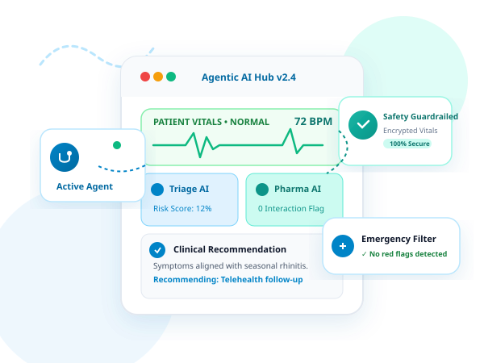

Agentic AI-Powered Healthcare Intelligence and Patient Assistance System
Collaborative autonomous AI agents working in harmony to streamline patient triage, verify prescription safety, interpret lab diagnostics, and augment physician decision-making with clinical guardrails.

Autonomous Multi-Agent Swarm for Healthcare
Unlike simple single-turn bots, our system coordinates specialized medical AI agents that independently evaluate symptoms, check contraindications, and synthesize safe guidance.
Dr. Nexus
Orchestrates incoming patient context, extracts clinical entities, and delegates to specialized sub-agents.
Triage Sentinel
Continuously evaluates vital signs and symptom severity against emergency triage protocols (ESI Levels 1-5).
RxGuard
Cross-references medications, potential adverse interactions, food-drug contraindications, and dosage schedules.
LabInsight
Translates complex laboratory panels (CBC, Lipid, HbA1c) into plain-English summaries for patients and doctors.
Comprehensive Healthcare Intelligence Portal
Multi-Agent Patient Assistant
Engage in conversational guidance with specialized agents. Inquire about persistent symptoms, prescription schedules, and recuperation steps.
Open AssistantSymptom Assessment Wizard
Step-by-step clinical questionnaire with severity gauges, timeline tracking, and automated generation of a printable triage summary.
Start AssessmentClinical Decision Support
Healthcare provider dashboard equipped with real-time patient queue stratification, vital anomaly warnings, and differential diagnosis aid.
Access Clinical PortalSmart Specialist Recommender
Intelligently matches symptom profiles with verified cardiologists, neurologists, pulmonologists, and general physicians for immediate scheduling.
Book SpecialistLab Report Plain Explainer
Toggle between technical laboratory values and friendly AI interpretations. Highlights out-of-range markers with actionable wellness tips.
View Sample RecordsEmergency SOS & First Aid
Rapid one-tap emergency calling, first-aid step-by-step visual guides for CPR, choking, acute allergic reactions, and nearest urgent care locator.
Open SOS HubExperience Instant AI Triage Evaluation
Select a frequent health inquiry below to preview how our autonomous Triage Sentinel parses severity, flags potential emergencies, and suggests appropriate clinical care.
Quick Agentic Consultation Triage Mode
Built with Stringent Medical Ethics
Our system is engineered as an auxiliary co-pilot, maintaining human physician primacy and patient safety at every layer.
Doctor-in-the-Loop
All high-stakes clinical summaries require licensed physician review and endorsement before entry into permanent EHR records.
Data Privacy Ready
End-to-end data encryption for sensitive patient health information in compliance with modern medical privacy principles.
Fail-Safe Emergency Intercept
Any detection of acute hemodynamic instability instantly redirects the patient to direct emergency dialing and dispatch instructions.